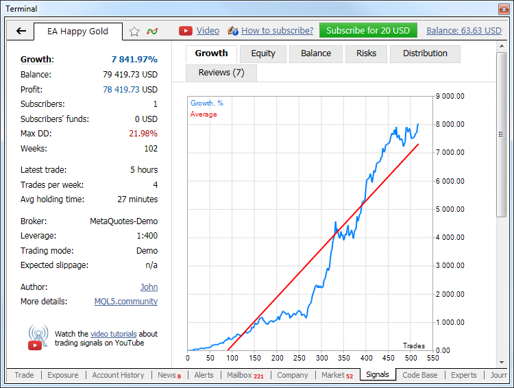

- Signal Providers
- Signal Subscribers
- Account Monitoring
Signal Subscribers
Signal Subscriber is a trader who subscribes to Provider's trading signals to copy trade operations of the latter on his or her own trading account. A weekly or monthly fee may be charged for subscription.
To become a Signal Subscriber, a user should have an active MQL5.community account. If you do not have an account yet, please register.
Your active account should be specified in the "Community" tab of the client terminal settings.
|
Important information for Signal Subscribers:
- How to configure the client terminal to use signals
- How can Provider's and Subscriber's accounts be synchronized
Choosing a Signal and Subscription #
You can choose a signal and subscribe to it both via MQL5.community website and the client terminal.
|
Watch video: Trading signals showcase How to choose a trading signals and subscribe to it for a couple of clicks? Its easy! Watch the video and you will know everything about trading signals. |

Showcase of Signals at MQL5.community
All signals available for subscription can be found at MQL5.community in the "Signals" section.
Rating
To help you choose the best signals, we compile a rating of signals based on various criteria. Top ranked signals show up first in the list. And vice versa, low rated signals are hidden from the Showcase on the site and in trading terminals to protect subscribers from poor-quality strategies.
Selection of Signals with the Best Conditions
The showcase of signals provides a special function for selecting signals with the most suitable conditions for copying. You just need to specify the name of the server your trading account is opened at. The system will pick up signals with the best matching settings of trading instruments and the lowest slippage.
Warning
When selecting a signal, make sure to carefully analyze the entire complex of trade reports. Pay attention to the warnings that are displayed on the signal page.
Sorting and Filtering
To select signals based on specific criteria, use the sorting and filtering functions.

Open the signal you are interested in by clicking on its name. Account monitoring page will appear. The page shows the complete trade statistics of the account including the history of trading operations and the current state of trading positions.
If you are satisfied with the signal (including its price), you can subscribe to it. Click "Copy Trades".

The trading terminal is launched. The selected signal page appears in the terminal at once, and the subscription confirmation window is opened. Subscription process is described below.
Trading signals in the client terminal
You can choose a signal and subscribe to it directly via the client terminal. Open "Signals" tab of "Toolbox" window.
|
Watch video: Detailed statistics of a trading signal For your convenience, the most valuable parameters of trading signals are placed in a separate block. From this video you will find out where to find them and what to pay attention to. |

|
Basic parameters are displayed in the signals list:
- Growth graph.
- Signal – signal name.
- Equity – equity at the signal's account.
- Growth – deposit growth in percentage value calculated on the basis of trade history without considering deposits and withdrawals;
- Weeks – number of weeks that have passed since the first trade on the trading account was performed (the entire account lifetime instead of the period since its registration as a signal is considered);
- Max DD – maximum balance drop from the local maximum in percentage value;
- PF – profit factor, ratio between gross profit and gross loss. One means that these parameters are equal.
- Price – signal price in USD. Also, "Add to Favorites"
 button can be found in this column allowing you to add a signal to Favorites.
button can be found in this column allowing you to add a signal to Favorites.
The list can be sorted by any of the above parameters. The first mouse click on the column name sorts the signals by the first parameter, while the second click – by the second parameter. To reset the sorting, click the upper line of the growth graph column.
Double-click the signal to see a detailed information about it.

|
Watch video: Subscribe to a trading signal How to subscribe to a signal and what parameters to set up: should you copy the stop levels, what part of your deposit will take part in copying and what slippage to choose? |

If you are satisfied with the signal (including its price), you can subscribe to it. Click "Subscribe" at the top of the toolbar. Subscription confirmation window will appear:
Basic signal data is displayed here:
- Signal – signal's name. When clicking on a name, you will move to a signal's description on MQL5.community.
- Author – signal provider's name. When clicking on it, you will move to the provider's MQL5.community profile.
- Broker – name of a broker server used by the provider.
- Growth – deposit growth on the provider's account from the moment of signal registration. The value is specified in percentage from the initial value.
- Date – the start and and date of the subscription.
To perform a payment, you can use your MQL5.community account funds. To do this, select MQL5 payment method.
Enter the password of your MQL5.community account to confirm your purchase. The specified amount is deducted from your account, and you will go to setting up copying of trade operations. The signal page will display a message about a successful subscription as well as subscription details and other useful information.
If your MQL5.community account has insufficient funds for buying a subscription, you may pay for it via one of the available payment systems directly in the terminal. To maintain a clear and unified history of subscriptions, the required amount will be first transferred to your MQL5.community account, from which a payment for the subscription will be made.
After selecting a payment method, the page of a corresponding payment system is opened. Specify the necessary payment data: your login and password in the payment system or card information.

|
Before subscribing to a signal the system checks some trading conditions on the accounts of the subscriber and provider:
- The minimal and maximal allowed volume for symbols – in case these settings do not match, there can be serious difference of the volume of the provider's trade operations and the volume of operations copied to the subscriber's account.
- Availability of symbols used by the provider on the subscriber's account – if some of the symbols used by the provider are not available at the subscriber's side, trades for such symbols are not copied.
If a mismatch is detected, the corresponding warning is displayed in the subscription window. It is recommended to the signals with matching trading conditions.
|
After subscribing, move to the client terminal setting.
Client Terminal Setting #
To configure the signals in the client terminal, open the settings window and move to "Signals" tab.
Configure the following parameters:
- Agree to the terms of use of the Signals service – agree to the terms to start using the service. Read the rules carefully. If you agree, check the box next to the option. If you do not agree with the rules, do not use the Signals service.
- Enable realtime signal subscription – trading operations will be copied to your account only after this option is enabled. No operations will be copied to the account in case the option is disabled. The settings below will become editable only after enabling this option.
- Copy Stop Loss and Take Profit levels – Stop Loss and Take Profit placed at the provider's account will be also placed on your trading account if this option is enabled. These orders are executed at the broker's side. It means that they are executed regardless of whether the client terminal has been launched or not. Also, execution can be performed at completely different brokerage companies (if subscriber and provider have different brokers).
Therefore, it is guaranteed that a position will be closed when copying Stop orders in case a specified profit and loss levels have been reached.
- Synchronize positions without confirmations – automatic synchronization without additional confirmation. When subscribing to a signal, trading states of the Subscriber's and Provider's accounts are synchronized. This can be a primary synchronization when activating the subscription or a re-synchronization during copying.
If pending orders or non-signal positions (opened manually or by an Expert Advisor) are detected at the Subscriber's account during synchronization, the dialog offering to close the positions and remove the orders is displayed. If during the initial synchronization, a provider account has floating (unfixed) profit, a user will see a dialog window offering to wait for better conditions to start copying. In both cases, synchronization is not performed and copying of signals is stopped until the user makes the decision by clicking the appropriate dialog button.
If the platform is working around the clock without constant external control (for example, runs on VPS), confirmation requests to perform synchronization are left unanswered and thus can prevent signals from being copied. When this option is enabled, synchronization is always performed automatically without the need for Subscriber's confirmation.
- If there are custom positions/orders, they are left on the account, while the system starts/proceeds copying the Provider's trades.
- If the Provider has a floating profit, the platform does not wait for better entry conditions and starts copying immediately.
- Use no more than [A] % – percentage value of your deposit that can be used for following provider's signals. For example, if your balance is 10 000 USD and 90% is specified here, then 9 000 USD will be used for following the signals. This affects the calculation of volumes of the deals performed when following the signals. The volume is calculated proportionally. See "Signal Subscribers" section for more information. It is strongly not recommended to change the deposit load if you already have positions opened according to a signal. This will lead to correction of volume of the open positions (volume increase or partial close by reopening the positions at the current market price).
- Stop if equity is less than [B] – this parameter allows you to limit losses when using trading signals. If equity drops below a specified level, copying of trade signals will be automatically terminated, all positions will be closed and all pending orders will be removed. 0 means no limitations.
- Deviation/Slippage [C] spreads – this setting is similar to deviation set when orders are placed from the terminal. This is the value of the permissible deviation of the executed order price from the price initially requested by the client terminal when copying a trading operation. This value is displayed as a part of the current spread on the symbol used in trading operation.
The order is executed if the deviation is less or equal to the specified parameter. If the deviation exceeds the specified value, the terminal will increase the acceptable deviation by 0,5 of the spread and make another attempt to perform the trade operation. If the requote is received again, the accounts of the subscriber and provider will become unsynchronized. Later the terminal will try to synchronize them again.
After all the parameters have been set and subscription is allowed, your trading account will start synchronization with the Provider's one.
Synchronization with Provider's Account #
Synchronization is necessary to copy trades from a provider's account to a subscriber's one. The synchronization is performed at activation of a subscription and also periodically during signal copying.
A number of requirements should be met to carry out synchronization:
- Subscriber should not have open positions and active pending orders;
- total floating profit of all Provider's positions should be negative. This allows a Subscriber to enter the market at a price that is not worse than the Provider's one.
If at least one of these conditions is not met, the appropriate warning is displayed during synchronization attempt. Synchronization is not continued till the user makes the decision.
Enable "Synchronize positions without confirmations" option in the terminal settings in order not to receive warnings and synchronize automatically at all times. |
If the subscriber has open positions or pending orders, the following window will appear in case of trying to subscribe to a signal:

Carefully read the recommendations described in the dialog window. If you want to automatically close all the open positions by the current market price and delete the pending orders, check "I am aware of the risk and I agree to synchronize positions and orders immediately". Then click the "Close positions and synchronize now" button.
If you do not want the program to close the positions and delete the pending orders, click "I will check manually" or close the window.
It is strongly recommended NOT to perform trades manually or via MQL4 programs while being subscribed to a signal. Unrelated trades increase the overall load on the trading account as compared with the signal provider. |
If the total floating (unfixed) profit of all positions of the provider is positive, you will see the following window:

Carefully read the recommendations described in the dialog window. If you want to synchronize your account with the provider despite the positive floating profit, check "I am aware of the risk and I agree to synchronize trade positions immediately".
If you want to postpone the synchronization and wait until the floating profit of the provider becomes negative, click "Wait for better market conditions". Until the floating profit of the provider becomes negative the terminal will not synchronize the accounts and will not start copying trade operations.
Synchronization during copying #
After successful synchronization of orders, the platform can perform a re-synchronization. It is performed in case of network issues during copying to make sure that no trades from the Provider are missed.
If it turns out that some Provider's trades are absent on the Subscriber's account, the system copies them. Unlike the initial synchronization, the total floating profit of the Provider is not checked here. If the Subscriber started copying, they should follow the Provider's trading strategy to the maximum possible extent. It is impossible to copy some positions, while ignoring others.
In addition to the network issues, the reason for the absence of certain positions on the Subscriber's account may be activation of stop levels or closing positions manually:
- If the "Copy Stop Loss and Take Profit levels" option is enabled, the Subscriber copies Provider's operations together with stop levels. Different brokers may have different price flows, therefore stop levels on the Subscriber's account may be triggered earlier than on the Provider's one. If during re-synchronization, it turns out that a certain position on the Subscriber's account is already closed, while it is still open on the Provider's one, the service copies it again. To reduce the likelihood of such situations, it is recommended to use the account on the same server (broker) as the Provider's one for copying.
- If the Subscriber closes a copied position manually, it is opened again during re-synchronization. We strongly advise you against interfering with copying.
|
Copying Trading Operations, Volume Calculation #
After Subscriber's and Provider's accounts are successfully synchronized, copying of trading operations will start. This is done automatically.
Pending orders placed on Provider's account are not copied to Subscriber's account. Trade operations are copied when pending orders trigger: when a Buy Limit or Buy Stop order triggers, a buy signal is copied; when a Sell Limit or Sell Stop order triggers, a sell signal is copied.
|
The volume of trading operations performed on the Subscriber's account is based on the Subscriber's and Provider's available funds. The calculation is performed in several stages.
The volume is multiplied by the ratio of Subscriber's and Provider's balances considering deposit currency and allowable deposit load specified in the terminal settings.
Assume that the Subscriber's balance comprises 8 000 EUR, the allowable load is - 50% and the Provider's balance is 10 000 USD. The current EURUSD rate is 1.20000. If the Provider performs a deal with the volume of 1 lot, the same deal is performed on the Subscriber's account with the volume of 0.48 lots. Subscriber's balance comprises 4 000 EUR or 4 800 USD considering allowable load. Therefore, the volume ration will comprise 4 800 / 10 000 = 0.48.
After the balances have been considered, Subscriber's and Provider's leverages are also taken into account. If Subscriber's leverage exceeds the one of the Signal Provider, it does not affect a volume of a copied deal. Otherwise, the deal volume is changed in direct ratio to the correlation of a Signal Provider's leverage with a Subscriber's one.
For example, if a Signal Provider having a leverage of 1:100 opens a deal of 1 lot, a Subscriber having a leverage of 1:500 will open a deal of 1 lot in case of 100% copying and a deposit matching by size and currency. A subscriber having a leverage of 1:10 will open a deal of 0.1 lots in similar conditions.
Volume calculations are displayed in the "Journal" tab of the terminal. The sample entry is shown below:
percentage for volume conversion selected according to the ratio of balances and leverages, new value 24% |
Balance Operations on Subscriber's Account During Copying #
The total amount of subscriber's funds is changed after a balance/credit operation is performed. If the percentage value of signals copying has decreased by more 1% afterwards (the volume of copied trades is calculated considering the ratio of the subscriber's and provider's balance), the subscriber's account is forcedly synchronized with the provider's one. This is done to correct the subscriber's current positions according to the new copying percentage value.
If the subscriber's funds have increased due to the balance or credit operation, no forced synchronization is performed.
Requoting #
The terminal may get a requote when copying a trade operation of a provider (the server returns new prices as a response to a trade request at the specified price).
If the deviation of the new price exceeds the "Deviation/Slippage [C] spread" value specified in the settings, the terminal will increase the acceptable deviation by 0,5 of the spread and make another attempt to perform the trade operation. If the requote is received again, the accounts of the subscriber and provider will become unsynchronized. Later the terminal will try to synchronize them again.
Subscriptions Displaying in the Terminal #
For convenient working, trade accounts subscribed to signals have special icons in "Navigator" window:
When hovering the mouse cursor over the name, the subscription's expiration date is displayed. The context menu contains commands for viewing the signal and unsubscribing from it. The latter one is displayed only if the appropriate trading account is currently active in the terminal.
If the current trade account is subscribed to a signal, the corresponding icon is also displayed in the account state bar on "Trade":
Signal Copying Report #
Statistics on signal copying is displayed in "My Statistics" tab. It contains data on all signals the current trading account has ever been subscribed to.
|
Watch video: The report on the copied trades Detailed information on complete and active subscriptions will help you to estimate the effectiveness of every single provider. These reports will show you the profit gained from money spent for subscription. |

All values in the list are only based on the trades copied to the trading account in accordance with the signal:
- Growth graph.
- Signal – signal name.
- Growth – deposit growth in percentage value calculated on the basis of trade history without considering deposits and withdrawals;
- Weeks – number of weeks, during which the signal was copied;
- Max DD – maximum balance drop from the local maximum in percentage value;
- PF – profit factor, ratio between gross profit and gross loss. One means that these parameters are equal.
- End date – signal subscription end date.
The list can be sorted by any of the above parameters. The first mouse click on the column name sorts the signals by the first parameter, while the second click – by the second parameter. To reset the sorting, click the upper line of the growth graph column.
Prolonging a Subscription #
If a subscription expiration time approaches, and you want to continue using it, you should prolong it. It can be done at MQL5.community or directly in the client terminal.
MQL5.community
The list of subscriptions connected with your MQL5.community account is available on the "My Subscriptions" tab of the "Signals" section. To prolong a subscription, click the button against it:
After that, you will go to the following page:

Check if all the information is correct. If you agree to the terms of subscription including its price, click "Renew subscription".
Client Terminal
To manage subscription in the client terminal, open a page of any signal. "You already subscribed to [signal name]" message is displayed in the upper panel. The signal name is a link leading you to the signal's page.

To prolong the subscription, click the button "Renew subscription". After that, the following window will appear:
Check if all the information is correct. If you agree to the terms of subscription, make a payment for prolongation just like when buying a new subscription. In case of a free signal, just specify your MQL5 account password as a confirmation of the prolongation.
|
Unsubscribing #
If you do not want to copy signals according to a subscription, it can be canceled.
After canceling a subscription, the payment amount locked for it on your MQL5.community account will be irreversibly transferred to the signal provider. If you experience problems receiving signals, do not cancel the subscription and apply to Service Desk through your MQL5.community profile. |
A subscription can be canceled at MQL5.community or in the client terminal.
MQL5.community
The list of subscriptions connected with your MQL5.community account is available on the "My Subscriptions" tab of the "Signals" section:
To cancel a subscription to a signal, click the button against it.
If you want to stop copying deals temporary, do not unsubscribe from the signal. Instead, suspend the subscription by clicking |
Once you click , you'll go to the page where you need to confirm the cancelation of the subscription:

Check all the information and carefully read the warning about charging the payment for the subscription from your account.
After canceling a subscription, the payment amount locked for it on your MQL5.community account will be irreversibly transferred to the signal provider. If you experience problems receiving signals, do not cancel the subscription and apply to Service Desk through your MQL5.community profile. |
If you really want to unsubscribe, check "I agree to unsubscribe from a signal and release a payment to signal provider" and then click "Unsubscribe".
Client Terminal
To manage subscription in the client terminal, open a page of any signal. "You already subscribed to [signal name]" message is displayed in the upper panel. The signal name is a link leading you to the signal's page.
If you want to stop copying deals temporary, do not unsubscribe from the signal. Instead, suspend the subscription by disabling the option "Enable realtime signal subscription" in the client terminal settings. In future, you'll be able to start the subscription again by enabling this option. |
To unsubscribe from the signal, click the button "Unsubscribe". After that, the window where you need to confirm the cancelation of the subscription will be opened:
After canceling a subscription, the payment amount locked for it on your MQL5.community account will be irreversibly transferred to the signal provider. If you experience problems receiving signals, do not cancel the and apply to Service Desk through your MQL5.community profile. |